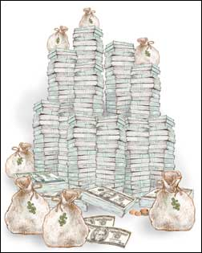

Green Investing
Save for a comfortable retirement and use your money to make a difference.
By Tim Kridel
June/July 2005
Investing doesn’t necessarily mean gritting your teeth, buying shares of large companies and telling yourself that the ends (financial security in retirement) justify the means (giving money to companies with practices that may run counter to your values). The alternative is socially responsible investing (SRI), where you or the person who manages your money focus on companies that operate according to values akin to yours.
For example, you might purchase stock in renewable energy companies instead of oil firms, invest in a business that’s committed to employing a domestic workforce rather than outsourcing to offshore labor, or simply avoid companies that produce alcohol and tobacco products. And those are just a few examples - the numerous SRI options support a range of values, from liberal to conservative perspectives on social, religious and environmental issues.
SRI may be a niche compared to other types of investing, but it’s hardly chump change. In 2003, SRI accounted for more than $2 trillion, according to a study by the nonprofit Social Investment Forum. That’s more than $1 out of every $9 under professional investment management in the United States. It’s also enough money to get the attention of traditional stockbrokers and the companies in which they invest.
There are many forms of SRI - from pension funds to community investing. The most common segment is mutual funds, which pool the dollars of individual investors to buy stock in companies. But regardless of the form, the basic principle is straightforward: SRI uses one or more screens, which are criteria used to avoid investing in companies that, for example, sell tobacco, operate in countries with oppressive governments, abuse the environment or don’t pay employees a living wage. The more screens that a company can’t pass through, the less likely mutual fund managers will invest in it - consequently the company will have less access to money for research, new factories, even its daily operations. In a sense, SRI is one way you can hit an irresponsible company where it will hurt: in the wallet.
If that strategy sounds familiar, that’s because it is. SRI may evoke memories of South Africa’s old apartheid regime, which fell largely because investors boycotted companies that did business there. A more recent example is Sudan, which is under the thumb of a genocidal government. That concern has lead to scrutiny of foreign companies that directly or indirectly benefit the regime through their business. Although Talisman Energy, Canada’s largest independent oil company, initially resisted calls to suspend its operations in Sudan, it relented when socially conscious investors sold their shares in disgust, a move that dramatically cut the value of its stock. SRI also made news during episodes of corporate malfeasance such as the Union Carbide poison-gas disaster in Bhopal, India, the Exxon Valdez oil spill and the Enron accounting scandals.
“During the recent downturn in the stock market, with all the controversies, SRI funds didn’t suffer the outflows that other mutual funds did,” says Cliff Feigenbaum, publisher of Green Money Journal, a newsletter that focuses on SRI. “They actually got an inflow because people didn’t want to be part of the corporate irresponsibility.”
Pax World Funds is one SRI mutual fund company that saw increased investment. “We saw within our shareholder base what the other [SRI] funds were reporting: new money coming in, even as the market was going down,” says Anita Green, vice president of social research for Pax World. “A lot of this had to do with corporate scandals. People were fed up, so they moved to socially responsible funds. And among the shareholders we already had, they stayed with us through the downturn. That’s typical for our shareholders. We have high loyalty.”
SRI Choices
All SRI funds begin with the principle of investing with your values, but that’s where the similarities end. “Different funds take different approaches to SRI,” says Feigenbaum, who is co-author of Investing With Your Values. “So it does take a little research.”
If the return on your investment is as important as whether it’s going to socially responsible companies, it pays - literally - to read between the lines when perusing an SRI fund’s advertisement or prospectus. In fact, SRI has been criticized for playing up performance only when the numbers are good. According to a study by the Natural Capital Institute: “If the performance is lower than accepted benchmarks such as the S&P [Standard & Poor’s 500-stock index] or Dow Jones, the language will focus on the fund’s mission. If the performance is as good or better than standard indices, the language will highlight returns.” That’s something to keep in mind when picking an SRI fund.
Another place to start is by looking at your existing options. For example, if your employer offers a 401(k), ask if you have the option of investing in SRI mutual funds. The same applies if you have an Individual Retirement Account (IRA). All investors, socially responsible or not, should expect their investment advisor to help them pick the mutual funds or individual stocks that best match their priorities and risk tolerance.
Nevertheless, you shouldn’t rely entirely on the advice of others. In order to make informed investment decisions, it helps to have a basic sense of which way the winds are blowing in terms of politics and the economy. Case in point: the re-election of President Bush, whose administration favors fossil fuels, created a buying opportunity for investors interested in renewable energy.
“The marketplace reacted to the election and pushed renewable energy stocks down,” says Matt Patsky, co-manager of the Winslow Green Growth Fund. “I think they’re pretty good investments now, so we’re starting to add some of them back into the portfolio.”
So why now? It’s a basic tenet of investing: Buy low and sell high. If you’re optimistic about a company’s long-term potential, a stock price that’s temporarily pushed down is an opportunity to pick up shares at a reduced price.
That outlook points to one of the tough decisions that every investor faces: It’s one thing to have high regard for a company; it’s quite another to have the patience and risk tolerance to stick with that company even when other indicators suggest the money is better invested elsewhere. But keep in mind that investments appearing to be off the beaten path, visionary or just plain risky can deliver a bigger payback to investors who get in on the ground floor.
“I have clients who I put into natural food companies years ago, before they went mainstream, and they’ve done very well with that,” says Hal Brill, president of Natural Investment Services. “We identified Whole Foods when it was $10 a share. It’s $90 now.”
Another example of the way that SRI can pay off is when doing good also means doing well. “A company with stronger environmental management could be less likely to be exposed to environmental liabilities,” says Carsten Henningsen, chairman of Portfolio 21.
Doing The Homework
Research can be challenging, both for individual investors and for the fund managers. Suppose that a fund is considering investing in XYZ Toys. If the screening criteria include labor practices, one obvious question is whether the toys are made by people who are paid a fair wage and who work in a factory under safe conditions.
But getting clear answers to such questions isn’t always easy. For example, if XYZ Toys is based in one country, but the toys are made in another, the geographical distance can limit management’s view of the day-to-day operations. Considering the trend toward offshore manufacturing, this situation is more the rule than the exception. If the factory is owned or operated by a subcontractor, management’s view gets even cloudier. And if that subcontractor buys parts from another company, XYZ Toys may not know a thing about the conditions that played a part - however small - in the toys that it sells.
“By the time you get down five or six levels, the company says: ‘We don’t know. Our contract is with this first company. If they’ve contracted out, we don’t know,’” Green says. “So it’s difficult to know because the companies don’t know.”
It’s also tough to determine whether the company really doesn’t know or whether it just doesn’t want to know. Pleading ignorance - real or feigned - won’t necessarily convince a fund manager that the company meets its screening criteria. “Socially responsible investors are holding their feet to the fire on this,” Green says. “We’re saying that there are certain things responsible companies need to do, such as have a code of conduct and make sure it’s enforced in the places where your goods are made and that it’s written in the local language. Have independent monitors verify working conditions.”
But how can an investor tell whether a fund manager is digging down to that level or just taking the company’s assurances at face value? Research is one way, but the ability to ferret out the information you need ultimately depends on the details the fund provides. It’s a good sign if, for example, a fund provides frequent, detailed reports about its discussions with portfolio companies’ management and explanations of the methodology it uses to verify those companies’ claims. Furthermore, “investors can call and inquire about a fund’s research process,” Henningsen says.
The good news is that SRI fund managers are steadily getting better access to corporate managers. Considering that the sector represents more than $2 trillion, few companies can afford to stonewall questions from SRI investors.
“I’ve been in the field 15 years, and at the beginning, when a fund would call a company, they’d get their public relations director,” says Brill, who is co-author of Investing With Your Values. “Now they get the CFO [Chief Financial Officer] or CEO [Chief Executive Officer]. Access has improved tremendously, and that’s all due to the fact that individual investors have decided to invest with their values.”
Of course larger SRI funds typically have greater access. “Ones like Calvert or Pax have big enough research staffs and enough assets under management to kick the tires at every company,” Brill says. “It’s just a little harder when you’re small.”
Longtime SRI investors acknowledge the challenges that fund managers face when trying to figure out whether a company meets SRI standards, especially when the criteria aren’t clear. It’s hard to determine, for instance, whether a tobacco company or a distiller of alcoholic beverages “promotes a culture of materialism,” which is one investment screen at some SRI firms.
“I’ve become a little disenchanted with how modest a lot of the screens are and the fact that a lot of these funds are still including a lot of the megacorporations,” says Jim Cummings, a veteran SRI investor.
Some companies may rate well in one screen, but rate poorly in another. To make choosing an SRI mutual fund easier, it may help to identify which criteria are the most (or least) important to you. Your mutual fund manager will help with these decisions. And if you want to do additional research on specific companies, a good resource is this site from Co-op America.
Shareholder Activism
Sometimes an SRI fund may hold shares in a company specifically so it can influence that company’s business decisions. In other cases, a company might pass a fund’s screens, but later be subject to shareholder activism when its practices counter the fund’s objectives.
“We’ll get calls from shareholders who are upset that we hold shares in a specific company,” Green says. “Then in their next breath, they’ll say, ‘Why aren’t you doing something about what this company is doing?’ The answer is, we are. We have to hold shares in order to get the company to come to the table and talk. If you’re not an investor, you don’t have leverage.”
That’s why you shouldn’t automatically dismiss a fund with a portfolio containing companies that fall outside your screen. If you have doubts, contact your fund manager - it’s your money, you have the power to decide which companies do and do not make you feel comfortable. Also keep in mind that, like investing itself, shareholder activism often takes time before you start to see results.
Indeed, the fact that SRI already is making an impact says a lot about what can be accomplished - and what’s left to be done. “Say we’re choosing the better half of companies out there,” Brill says. “That still leaves an awful lot of room for improvement.”
But if SRI limits your investment options by half, does that mean you won’t be as financially secure at retirement as if you’d focused only on companies and funds that offered the greatest potential return in investment? The answer is, it depends. Any investment’s payoff hinges largely on risk. If renewable energy turns out to be the next big thing, you might get a better return than an investor who bought shares of long-standing corporations simply because they seemed like safe investments.
Some studies suggest that SRI can produce returns at least as good as conventional investments. That’s a mark in SRI’s favor, but keep in mind that not all investments are created alike. Be sure to research a fund’s historical performance, not just whether it’s an SRI fund. For example, over the past decade, the Ariel Appreciation (SRI) mutual fund has offered a better return than the S&P 500. Some other SRI funds have not performed as well. The bottom line, though, is that SRI not only allows you to make money for a secure retirement, it empowers you to make a difference with your money.
The Importance of Investing
Why should you invest? After all, isn’t it safer to buy certificates of deposit (CDs) or bonds, or just stash cash under a mattress? The short answer is that by investing, you stand a better chance of making money over the long term.
For example, CD rates currently are hovering around 3 percent, depending on how much cash you have and how long you’re willing to sock it away. (Visit www.bankrate.com for a rundown of current rates for CDs.) With rising inflation rates (the 2004 average was 2.68 percent), at best you’re only doing a little better than breaking even, and at worst, you’re actually losing money. That’s because even though you have interest income, those earnings are barely keeping pace with the cost of living, let alone going beyond it. Money stashed under the mattress does even worse because it pays no interest.
Investing is viable for just about any lifestyle. For example, if you save just $20 a week and put it in conservative, low-risk investments that earn an average of 8 percent (a return rate average investors generally can expect), you’ll have a considerable amount of money when you retire. After 20 years, that $20 a week will have grown to about $36,900. Over 30 years, your nest egg would more than double to nearly $76,000.epending on how that money is invested - such as through your employer’s 401(k) program - you could save on taxes, too, freeing up more money to invest. With online investment calculators, such as this one from Van Kampen, you can plug in different amounts and timelines for different goals. But regardless of the level of financial security you want when you retire, don’t look at investing as something you can’t afford to do. Instead, it’s something that you can’t afford not to do.
Community Investing
When is an investment considered successful? The traditional yardstick is that not only do you still have the amount originally invested, but you also have money coming in, in the form of dividends or, if you sell an investment that went up in value, as a profit.
But success also can be measured in terms of whether the investment has helped make the world a better place. That’s the logic behind “community investing,” where money flows to grass-roots projects. One example is the Northern California Community Loan Fund, which has provided working capital for youth theaters, halfway houses and other organizations that usually can’t access traditional lending opportunities.
Community investing is increasingly popular - growing 84 percent between 2001 and 2003, according to the nonprofit Social Investment Forum. Like other forms of socially responsible investing, community investments require some homework to make sure that your money ends up where you want it.
One well-known source of community investments is the Calvert Foundation. “They’ve created a note that works like a CD, so you can put in $1,000 and up - you don’t have to be well-heeled - and choose your rate of interest and term,” says Hal Brill, president of Natural Investment Services. “They have a pool of community investments, and you can designate whether you want to invest internationally or in a particular region of the United States. For larger amounts, they’ll work with you to customize a portfolio of community investments.”
Green Investing Resources
Calvert Social Investment Foundation
(800) 248-0337
Specializes in community investing.
Global Warming & Your Mutual Fund
Helps assess the potential risks of global warming to the value of numerous mutual funds.
Green Money Journal
Quarterly newsletter that tracks SRI.
Investor Words
Glossary of investment terms.
The Motley Fool
Dedicated to educating, enriching and amusing individual investors.
Natural Capital Institute
Researches principles and business practices that lead to social justice and environmental restoration. NCI is an offshoot of the work of Paul Hawken, author of The Ecology of Commerce.
Responsible Shopper
Learn the good, the bad and the ugly about companies on a range of issues.
Social Investment Forum
Has an overview of SRI and links to other resources. The “SRI Mutual Funds” link provides detailed information about more than 100 funds, including their screening criteria, financial performance and account minimums.
SRI World Group
SRI and community investing news, and a free SRI mutual funds guide.
Tim Kridel is a freelance writer who lives in Fairway, Kan. He was introduced to the magic of compound interest at age 3, when his parents opened a savings account for him. He later graduated to CDs and 401(k)s. His current investments include stocks, Roth IRAs, an SEP plan and life insurance, but he doesn’t own shares of any of the companies or funds reported on in this article.
 DAVE CHANNON Investing is viable for just about any lifestyle, and socially responsible investing can make you feel good about where your money goes. |
DAVE CHANNON Save just $20 a week and put it in conservative, low-risk investments that earn an average of 8 percent (a return rate average investors generally can expect), and you’ll have a considerable amount of money when you retire. |
DAVE CHANNON After one year: $1,074 |
|
DAVE CHANNON After five years: $5,977.71 |
DAVE CHANNON After 10 years: $13,738.67 |
DAVE CHANNON After 20 years: $36,896.78 |
|
 DAVE CHANNON $20 a week invested for 30 years: $75,932.38! |
|
|